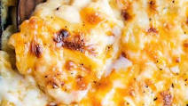

Delicious Ultra Creamy, Mac and Cheese

yield: 4 servings
prep time: 15 minutes
cook time: 25 minutes
enjoyment time: multiple days
total time: quick maffs
MMMMMM, this is the creamiest, most delicious mac and cheese you
could ever hope of trying, and you can make it all at home. Albeit
a bit more complicated than throwing some Kraft mac on the stovetop,
this payoff is something that makes the extra effort worth it 100 percent!
Ingredients
- 3 pints whole milk
- 3 ounces white roux (butter and flour mixed in equal proportions and cooked)
- 1 tablespoon salt
- 2 tablespoons dry mustard
- 1/2 teaspoon nutmeg
- 1 pound American cheese
- 10 ounces grated Monterey Jack cheese
- 4 ounces grated Fontina cheese
- 12 ounces shredded cheddar cheese (sharp)
- 1 1/2 cups grated Parmesan cheese
- 8 cups drained, cooked elbow macaroni
- Bread crumbs
Directions
- Heat milk and stir in roux to thicken.
- Dissolve salt, mustard and nutmeg in a little water and add to thickened mixture.
- Reduce heat and gradually stir in all the cheese with a wooden spoon.
- Continue to cook, stirring constantly, until cheese has melted and sauce is smooth.
- Mix with elbow macaroni, top with bread crumbs and bake in a preheated 400 degree oven until browned and bubbly.